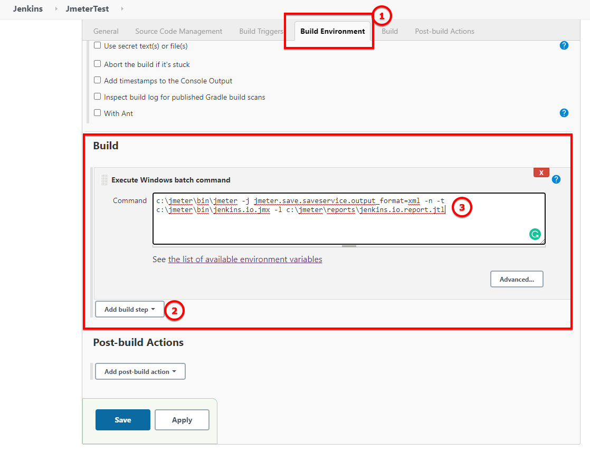

set OUT=jmeter.save.saveservice.output_format set JMX=/usr/jmeter/bin/jenkins.io.jmx set JTL=/usr/jmeter/reports/jenkins.io.report.jtl /usr/jmeter/bin/jmeter -j %OUT%=xml -n -t %JMX% -l %JTL%
Using JMeter with Jenkins
Table of Contents
There are several advantages to using JMeter and Jenkins together. Continuous integration and test automation have become standards in the DevOps world, but the performance levels and system complexity are constantly increasing.
With Jenkins, you can integrate all JMeter tests in your pipeline process, and better understand the details of your applications.
Some of the main benefits of using JMeter with Jenkins are:
-
Unattended test execution for each system.
-
Build failure logs and recovery steps.
-
Secure and easy access to test reports of each build.
-
Automation of routine work.
| This page outlines how to use Apache JMeter with Jenkins. The instructions are intentionally performed by running Apache JMeter on the Jenkins controller. Apache JMeter in a Jenkins production environment should be run on a Jenkins agent, not on the Jenkins controller. To learn more about Jenkins agents, refer to the using Jenkins agents page. |
Apache JMeter
Apache JMeter may be used to test the performance of static sites, dynamic sites, and complete web applications. It can also be used to simulate a heavy load on a server, group of servers, network, or object, allowing for strength testing or overall performance analyzation under different load types.
Jenkins Installation
The Jenkins docs has a page to help with the Jenkins installation process.. This guide uses the .jar installation. Refer to the guided tour page if you want to use .jar as well. Both installation methods produce the same results.
Install the Performance plugin
To integrate JMeter with Jenkins, we will use the Performance plugin.
Follow these steps to install it:
-
From your Jenkins dashboard page, go to: Manage Jenkins.
-
Go to the Manage Plugins page.
-
Select Available, and enter 'performance' in the search field.
-
Mark the installation checkbox, and select Install without restart.
If everything is successful, you will receive this confirmation screen:
JMeter Installation
To install JMeter, follow these steps:
-
Refer to the Apache JMeter download page.
-
Select your download option based on your system: .zip for Windows or .tgz for Linux. This tutorial is done on Linux, so the .tgz option is displayed.
-
Extract the downloaded file in your preferred location, for example
/usr/jmeter. -
Edit the file:
<YOUR-JMETER-PATH>>/bin/user.properties. For example, usr/jmeter/bin is the file path used here. -
Add this command to the last line of the file:
jmeter.save.saveservice.output_format=xml. Save and close the file to ensure the changes are made.
This command integrates the output from JMeter into Jenkins. Now let’s create our JMeter test plan.
First JMeter test plan using a GUI
JMeter uses test plans to organize each test. Once configured, Jenkins calls all test plans defined in a pipeline, and then shows the results in the build reports. This means all test plans must be configured on JMeter first. After this is complete, enter the info in Jenkins so it knows which tests needs to call.
Follow these steps to create a test plan:
-
Run the file:
<YOUR-JMETER-PATH>>/bin/jmeter.shto open the JMeter GUI. For example, /usr/jmeter/bin/jmeter.sh would be used in this example. In a definitive installation, you can set these commands to your path system or system variables.For Windows users the file will be jmeter.bat. -
From the JMeter GUI, go to File, and then select New.
-
Enter a name for your test plan.
-
On the left side of the screen, using the right or secondary select with your mouse, select your test plan. Follow this path: Add > Thread(Users) > Thread Group, and select it.
-
In Thread Group, increase the Number of Threads (users) to five and the Loop Count to two.
-
On the left side of the screen, right or secondary select Thread Group with your mouse, then follow this path: Add > Sampler > HTTP Request, and select the HTTP Request option.
-
In HTTP Request, enter the Name of your test, the Server Name or IP, and the Path context. For example, here we would use
Installing,www.jenkins.io, and/doc/book/installing/. -
Repeat steps six and seven two more times to different context/pages. For example, we will use www.jenkins.io/node. Now our plan has three things to test.
-
To add a visual report, right or secondary select your Thread Group, then follow the path: Add > Listener > View results in table. Select the View Results in Table option.
-
To save the test plan, select the Save (disk) icon in the upper left side of the screen or go to File > Save, and enter a name for the test plan with a .jmx extension. For example:
jenkins.io.jml.
Run the test and view the table results.
First JMeter test plan using terminal commands
Our test is working well in the graphical user interface, but to integrate it with Jenkins, it needs to be run from the command line.
To run the test plan using the command line, follow these steps:
-
From the terminal, run the following command:
-
If everything works properly, the report file is created at the indicated location by the
-lparameter.
Jenkins and JMeter running together
After running Jmeter from the command line, we now have everything needed to execute JMeter from Jenkins.
To execute Jmeter from Jenkins, follow these steps:
-
From the Jenkins dashboard, select New Item.
-
Enter the item name, for example
JmeterTest, select freestyle project, and then select OK. -
Go to the Build Environment tab, select Add build step, and select the option Execute Windows batch command.
-
Enter the same code we used to run JMeter in the previous section:

-
Go to the Post-build Action tab and select Add post-build action, then select Publish Performance test result report.
This option comes from the performance plugin. If it is not available, check the previous section and make sure you have installed the plugin. -
Fill in the source for these reports:
-
Save the project, and then select Build Now from the JmeterTest page.
-
After the job finishes, navigate to the Console Output view the execution details.
-
From the Console Output view, you can access the Performance Report, and can view the JMeter report data.

You now have JMeter running within Jenkins, and can use the data provided.
Please submit your feedback about this page through this quick form.
Alternatively, if you don't wish to complete the quick form, you can simply indicate if you found this page helpful?
See existing feedback here.